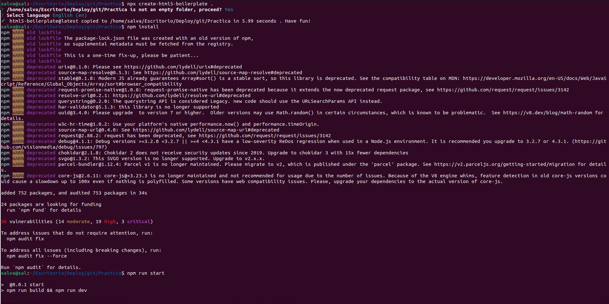
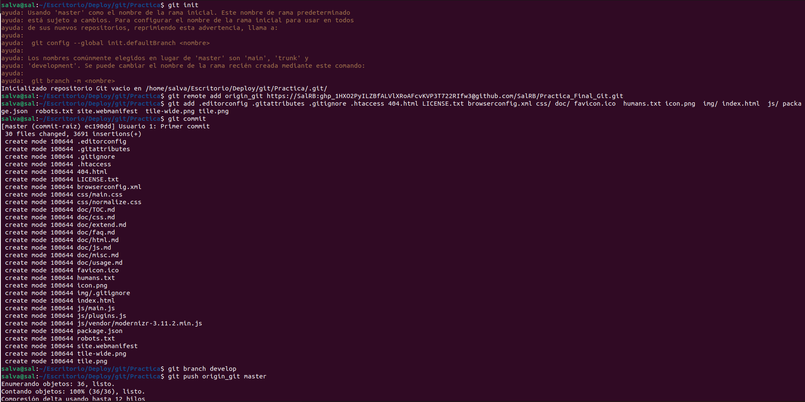
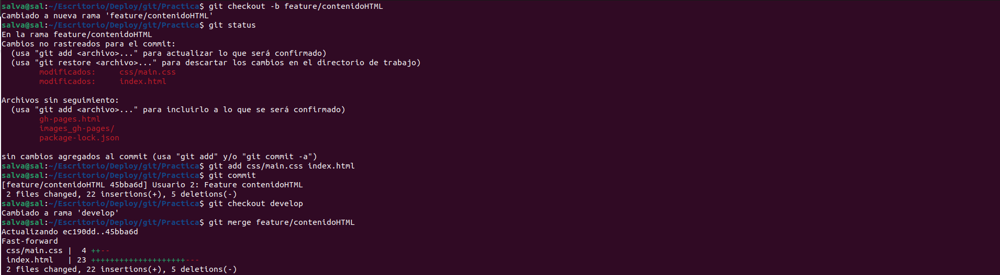
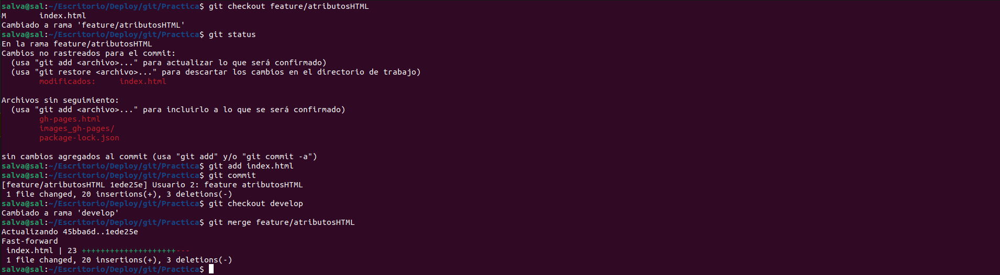
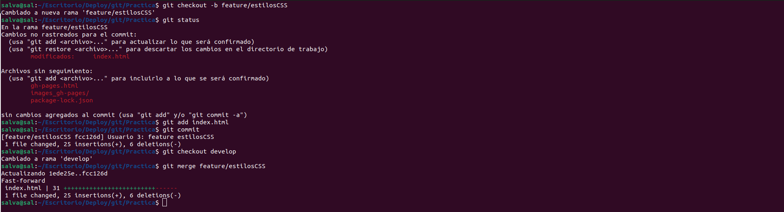
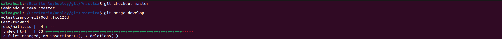
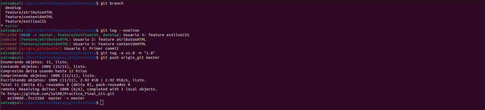
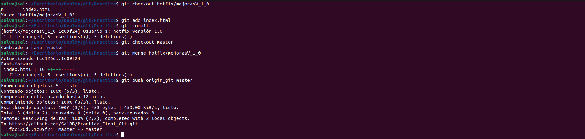

Git es el sistema de control de versiones más utilizado a escala global. Permite controlar con relativa facilidad las distintas versiones de nuestro proyecto, teniendo de esta forma más control sobre estas, pudiendo recuperar versiones anteriores de así necesitarlo. El sistema se basa en ramas, teniendo estas distintas funciones, entre ellas para separar las distintas partes del proyecto para un mayor control y eficiencia a la hora de trabajar.
GitFlow es una de las metodologías de flujo de trabajo más populares que es ideal para proyectos de gran envergadura ycon mucha gente implicada, ya que, disminuye en gran medida los posibles errores humanos.
Se basa en una estructura con 2 tipos de ramas, unas principales, destinadas a versiones más importantes y con un tiempo de vida indefinido, y otras de función, destinadas a funciones puntuales que luego serán fusionadas con una rama principal, estas tienen como tiempo de vida lo que se tarde en terminar la funcionalidad para la que fueron creadas.
Lo primero que haremos será crear el proyecto, empezando con crear una carpeta donde se localizará, tras esto vamos a aplicar un Boilerplate, de esta forma, generaremos la estructura de archivos del proyecto. Para esto utilizamos el comando "npx create-html5-boilerplate new-site" y npm install para que instale lo que necesite.
Tras esto, haremos la estructura inicial de la página que incluirá el el título, la barra de navegación, una breve descripción del curso y el footer.
Lo primero será hacer un "git init" para inicializar el proyecto, tras esto, lo vincularemos con el repositorio remoto de github con "git remote add nombre_rama_remota enlace_repositorio"
Ahora vamos a crear nuestra primera rama de feature, donde haremos los cambios que tienen que ver con la funcionalidad que estamos desarrollando. Para ello, creamos una rama que se llame feature/nombre_feature, hacemos los cambios que debamos y la fusionamos con la rama develop cuando hayamos terminado. También podemos borrar esa rama si consideramos que no la vamos a actualizar porque la funcionalidad está completamente terminada.
  Una vez la versión de la rama develop, está lista, iremos a la rama master y fusionaremos la rama develop con esta, de esta forma la rama quedará lista para producción. Tras ello etiquetamos la versión como la 1.0 y la subimos.
 Una vez tenemos los cambios en la rama master, significa que esa versión debería ser completamente funcional, sin embargo, pueden salir errores, en estos casos deberemos utilizar ramas de hotfix para solucionarlos y aplicar los cambios sobre la rama master.
